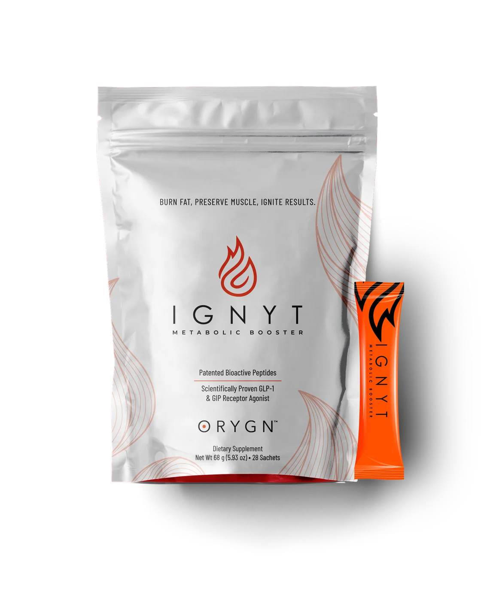

Drops
triGLP
A small liquid format designed for sublingual use.
- Small drop format
- Used under the tongue
- Dedicated research and usage guides
ORYGN products in New Zealand
triGLP and IGNYT both use salmon-derived bioactive peptide positioning, but they are different finished products. Compare the published format and practical routine without assuming one produces a better health outcome.
Reviewed 15 October 2026 · New Zealand support through Embrace Health
Drops
A small liquid format designed for sublingual use.

Drink-mix sachets
A powdered format portioned into individual sachets and mixed with water.
triGLP Wellness is operated by Embrace Health in Auckland. New Zealand customers can ask for current product information, local availability and ordering support. Some orders may be fulfilled through ORYGN's international shop, so confirm current stock, shipping, pricing and any taxes before buying.
Start with practical fit: the current label, your allergy and health considerations, and whether drops or a prepared drink are easier to use consistently. The available public material does not justify promising that either format will create a particular weight or metabolic result.
Separate ingredient research from finished-product evidence.
Read the guide →ComparisonUnderstand why pathway language does not create medical equivalence.
See the differences →PracticalCurrent directions, precautions and sensible tracking.
Read the usage guide →